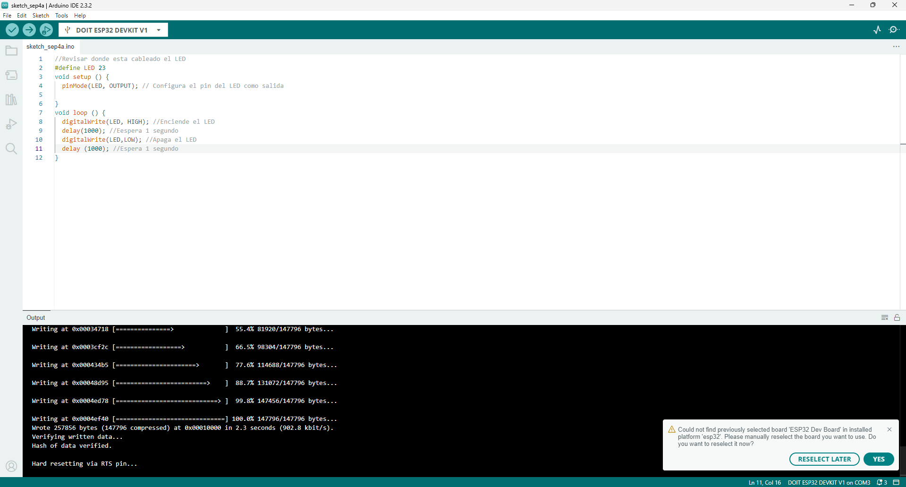
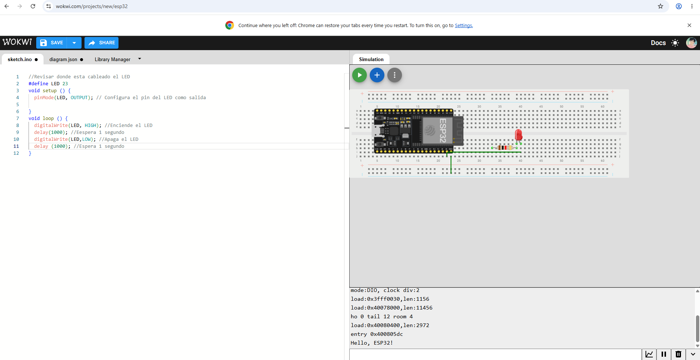
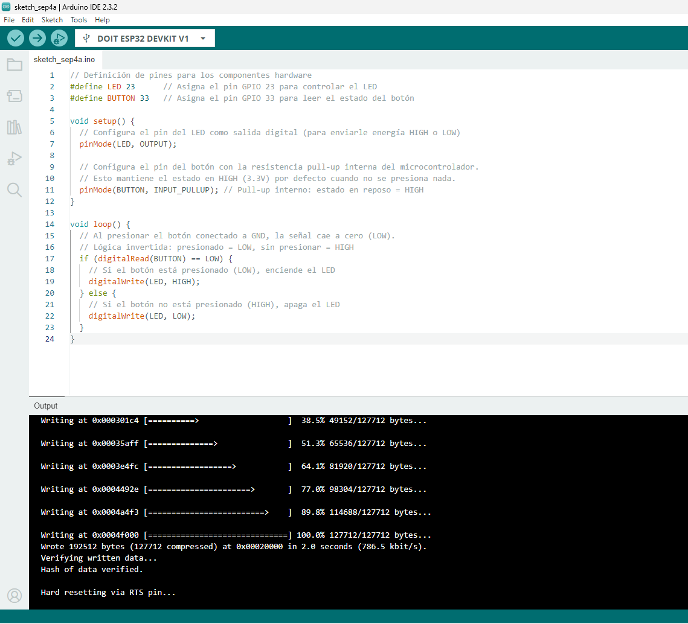
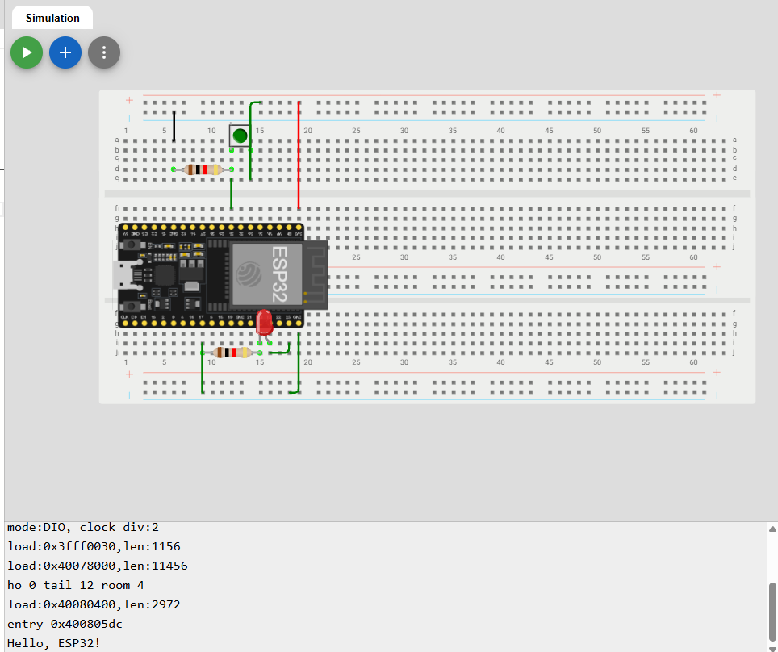
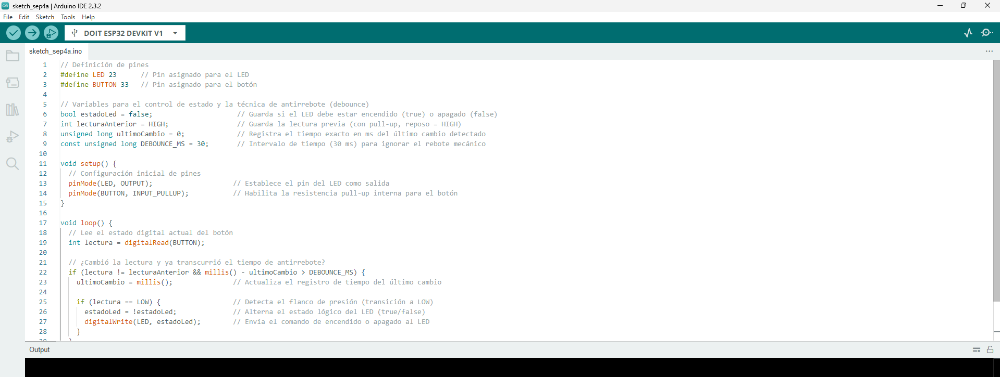
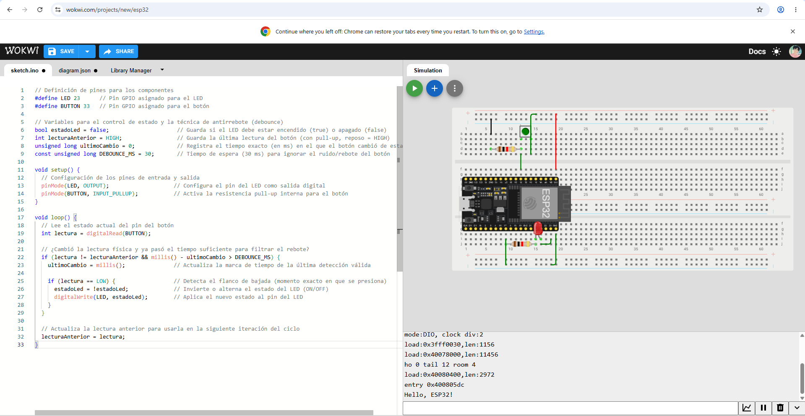
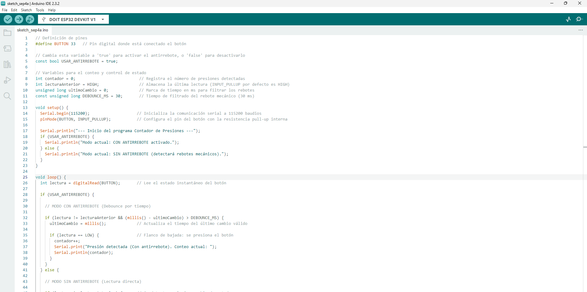
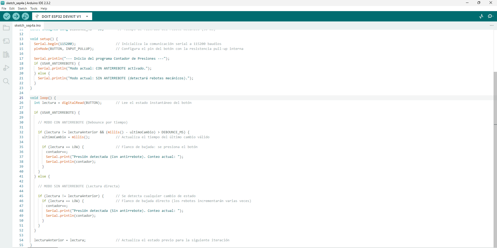

Reporte de Práctica: ESP32 - Salida, Entrada & Antirrebote
1. Códigos e Implementación en el IDE
Programa 1: BLINK (Salida Digital)


Programa 2: BLINK con Botón (Entrada Digital)


Programa 3: TOGGLE con Antirrebote (Sin delay)


Programa Extra: Contador con y sin Antirrebote


2. Esquemáticos y Montaje
- Asignación de Pines (GPIOs):
- LED: Conectado al GPIO23 a través de una resistencia limitadora de \(220\ \Omega\) hacia tierra (\(GND\)).
- Botón: Conectado entre el GPIO33 y \(GND\) para operar utilizando la resistencia interna
INPUT_PULLUP.
3. Explicación Teórica
a. ¿Qué es el rebote de un botón?
El rebote (bounce) es un fenómeno mecánico inevitable. Al presionar o soltar un interruptor o botón físico, las láminas metálicas internas no efectúan un contacto limpio e instantáneo, sino que chocan y vibran microscópicamente durante varios milisegundos (típicamente entre \(1\text{ ms}\) y \(30\text{ ms}\)). Debido a que el microcontrolador ESP32 opera a altas frecuencias de procesamiento, interpreta este ruido de conmutación como múltiples pulsaciones consecutivas muy rápidas en lugar de una sola acción del usuario.
b. ¿Por qué con INPUT_PULLUP la lógica queda invertida?
Al definir el pin mediante INPUT_PULLUP, se activa internamente una resistencia conectada directamente a la línea de alimentación de \(3.3\text{ V}\).
* Estado en reposo (sin presionar): La resistencia fija la entrada en un voltaje alto, haciendo que digitalRead() devuelva el valor HIGH (\(1\)).
* Estado activo (presionado): Al presionar el botón, la señal se deriva directamente a \(GND\) (\(0\text{ V}\)), provocando que digitalRead() devuelva el valor LOW (\(0\)).
De este modo, la lógica de lectura resulta invertida con respecto al estado físico del pulsador (reposo = HIGH, presionado = LOW).
4. Reporte de Fallas y Conclusiones
Bitácora de Errores
- Síntoma / Fallo: Al intentar compilar y transferir el programa a la tarjeta ESP32 DevKit V1 desde el entorno de desarrollo, el sistema arrojaba una falla indicando que no encontraba la plataforma seleccionada (
Could not find previously selected board 'ESP32 Dev Board') y no detectaba el puerto de comunicación. -
Cómo se encontró: Se observó la notificación de error en la barra inferior del IDE y se comprobó que el menú desplegable de selección de puertos no reconocía ningún puerto COM activo asignado a la tarjeta.
-
Se seleccionó la tarjeta DOIT ESP32 DEVKIT V1 y el puerto COM asignado, permitiendo realizar la compilación y subida del programa de forma satisfactoria.
Conclusión
Durante el desarrollo de la práctica se comprendió la configuración y manipulación de entradas y salidas digitales en la plataforma ESP32. Se verificó la eficiencia de activar la resistencia interna INPUT_PULLUP para simplificar las conexiones eléctricas en la protoboard, así como la efectividad de implementar algoritmos de filtrado por software mediante la función millis() para eliminar falsos disparos por rebotes mecánicos en lecturas digitales.
5. Evidencias en Video de Funcionamiento
Circuito 1: BLINK (Salida Digital)
Demostración del parpadeo básico del LED utilizando un retardo de \(1\text{ segundo}\) controlado por el GPIO23 de la ESP32.
- Enlace directo al video: Ver Demostración Circuito 1 en YouTube
Circuito 2: BLINK con Botón (Entrada Digital)
Funcionamiento de la entrada digital con lógica invertida (INPUT_PULLUP). El LED se enciende únicamente mientras se mantiene presionado el botón.
- Enlace directo al video: Ver Demostración Circuito 2 en YouTube
Circuito 3: TOGGLE con Antirrebote (Sin delay)
Prueba de alternancia de estado del LED (Encendido/Apagado) tras presionar el botón, utilizando filtrado de tiempo no bloqueante mediante la función millis().
- Enlace directo al video: Ver Demostración Circuito 3 en YouTube
Circuito Extra: Contador CON Antirrebote
Conteo preciso de pulsaciones en la consola serial. Se observa cómo el algoritmo filtra el ruido mecánico y cada pulsación incrementa el contador exactamente de \(1\) en \(1\).
- Enlace directo al video: Ver Demostración Contador Con Antirrebote en YouTube
Circuito Extra: Contador SIN Antirrebote
Prueba del contador desactivando el filtro por software. Se evidencia cómo los rebotes mecánicos del botón generan incrementos múltiples e impredecibles en el monitor serie con una sola pulsación física.
- Enlace directo al video: Ver Demostración Contador Sin Antirrebote en YouTube
//Se usó Claude para la elaboracion del codigo en Visual Studio y formato de la practica//